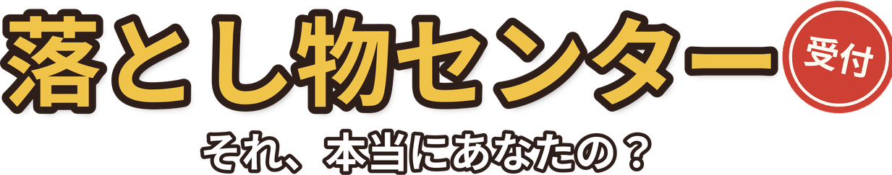
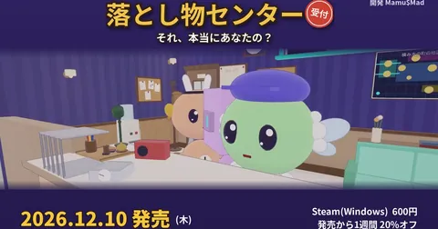
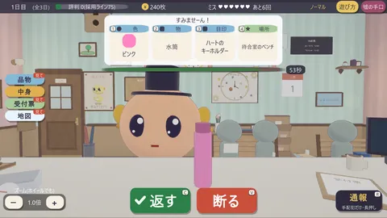
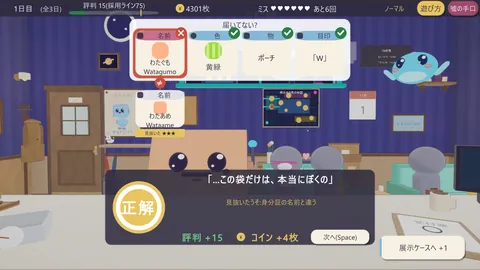
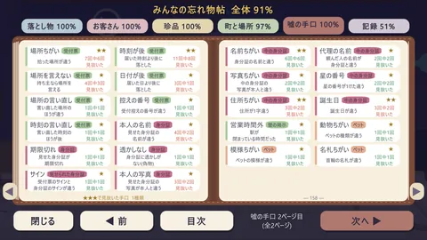
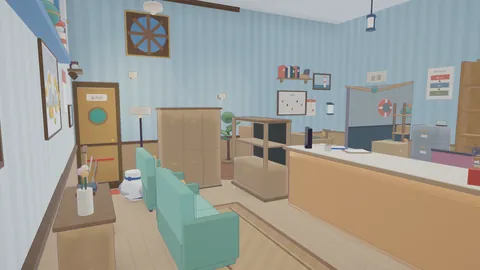
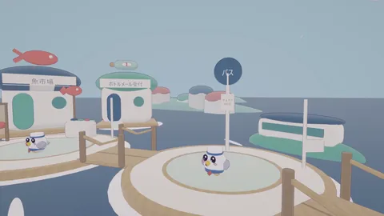
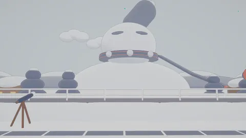
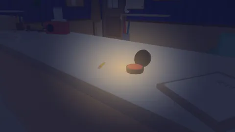
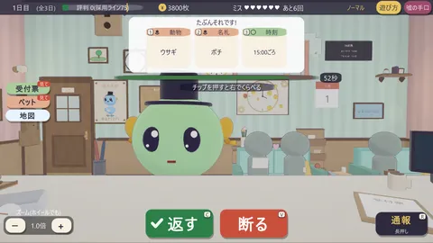

PRESS KIT / プレスキット
落とし物センター それ、本当にあなたの?
英題:Rightful Owner — 個人開発者 Mamu$Mad のデビュー作(はじめて完成させたゲーム)
このページについて
このページの素材(ロゴ・スクリーンショット・キービジュアル・PV)は、記事・動画・配信で自由にお使いいただけます。連絡や許可は不要です。取材のご相談は、メール(mamumad33@gmail.com)か X(@lostfound_game)のDMへお気軽にどうぞ。配信・収益化の扱いは配信ガイドラインをご覧ください。
ファクトシート
| タイトル | 落とし物センター それ、本当にあなたの? (英題:Rightful Owner) |
|---|---|
| 発売日 | 2026年12月10日 |
| 価格 | 600円(発売週は480円) |
| プラットフォーム | Steam(Windows)— ストアページ近日公開 |
| ジャンル | 推理・デスクワーク(うそを見抜く落とし物窓口) |
| プレイ時間 | 1回の受付勤務は10分ほど。くり返し遊ぶタイプ |
| 操作 | キーボードとマウス(窓口の仕事はマウスだけでOK)。コントローラー非対応 |
| 言語 | 日本語 |
| 開発 | Mamu$Mad(個人開発・本作がデビュー作) |
| リンク | 公式サイト mamu-mad.github.io / X @lostfound_game / YouTube |
どんなゲーム？
落とし物センターの受付係になって、「それ、わたしのです！」とやってくるお客さんの話(色・中身・目印・日付)と実物をくらべ、うそを見抜くゲームです。
- うその手口は46種類。見抜いた手口は図鑑「みんなの忘れ物帖」に集まる
- 舞台は5つの町(本町・港町・雪見・古都・ネオ都)。お客さんはすこしふしぎな住民たち
- センターの模様替えは72品。働いて、飾って、また働く
- 図鑑は全86ページ。うその手口のほか、ふしぎなお客さん14人・めずらしい落とし物(珍品)40個・記念品14個・町の住人や常連さんたちも
- 係長まで出世すると「研修室」が開く。新人4人に授業をして卒業試験へ。卒業した新人は助手として窓口で声をかけてくれる
- めったに出ない★★★のうそを見抜けたら、金のハンコ
- 証言の札にマウスを当てると、確かめられる証拠が光る(合っているかは自分で見抜く)
- 常連さんや町の住人との会話は、会うほど・話すほど増えていく。住人とはなかよしになれる
- 模様替えは、模型のように部屋をながめながら選べる
動画
- 紹介PV(64秒):https://youtu.be/BWp_adLVLtM
- 紹介ショート(33秒):https://youtube.com/shorts/5uZDt84B01A
- ショートアニメ「落とし物センターのある日」(ドット絵・全14話・11/4〜11/17 毎日19時):第1話 https://youtu.be/rY0TGeuu6b0
画像(クリックで原寸)


















GIF(クリックで大きく表示)


開発者について
Mamu$Mad(まむまど)。個人でゲームを作り、運営もひとりで行っています。本作『落とし物センター それ、本当にあなたの?』が、はじめて完成させたゲーム(デビュー作)です。開発のきっかけや制作過程の取材は大歓迎です。メール(mamumad33@gmail.com)か X のDMからご連絡ください。
クレジット・表記について
- BGMは、Sunoで作った曲を作者が選んで整えたものです
- 紹介ショートの音声は VOICEVOX:ずんだもん を使用しています
- この作品は、作者が中心となって、AI の助けを借りながら作りました